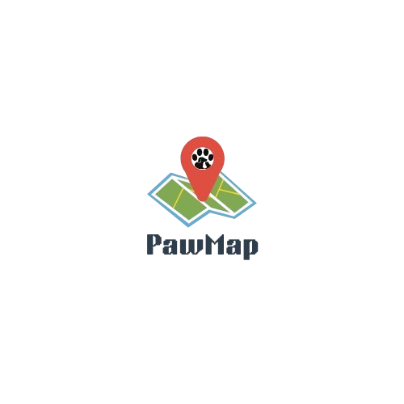

Emergency reports
Citizens submit dog and cat reports with location search, draggable map pin, photo review, urgency, and reporter verification.

Community rescue platform
PawMap helps citizens report stray, injured, or lost animals with a map pin and photo, while rescue volunteers, shelters, and CityVet teams coordinate the response in real time.
PawMap advertisement
Built from the app workflow
Citizens submit dog and cat reports with location search, draggable map pin, photo review, urgency, and reporter verification.
Rescue volunteers can set availability, receive open rescue requests, share live location, and update mission stages through shelter handoff.
Shelters publish adoptable pets, review adopter applications, and keep citizen histories organized.
Shelter teams can monitor animal tracker points, draw safe-zone boundaries, and flag out-of-bounds alerts.
Owners create lost-pet alerts and share posters for public alerts. Community members can report sightings with a photo and location to help bring pets home.
Adopters submit welfare updates and manage check-in appointments. Shelters schedule follow-ups, review updates, and record care outcomes.
Emergency reports can be saved on the device and retried when connectivity returns. In-app notifications and Android push alerts keep users informed as cases progress.
Photo detection helps identify dogs and cats in emergency reports and flags uncertain results for review.
Role-based access
Report animals, track rescues, share lost-pet alerts and sightings, apply as a rescuer or shelter admin, adopt, and submit post-adoption updates.
Manage availability, accept rescue cases, navigate to scenes, update outcomes, and share location.
Coordinate dispatch, review rescue requests, manage adoptions and follow-up care, oversee teams, and monitor tracker alerts and shelter boundaries.
Oversee approvals, lost-pet cases, incidents, analytics, completed rescues, personnel, governance, and platform notifications.
Install PawMap
Download PawMap v1.2.0 for Android using the button or QR code. You can also open PawMap directly if it is already installed on the device.
About the Developers

Lead Developer & Software Architect
UI/UX Designer, Frontend Developer, & Project Manager
Business Analyst & QA Engineer